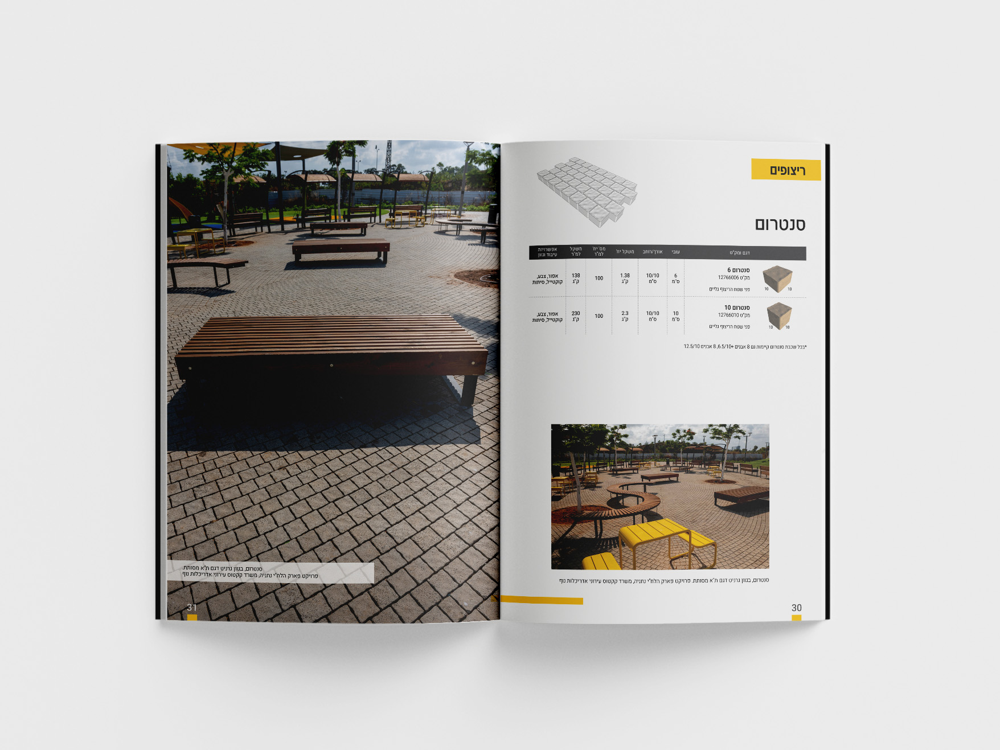
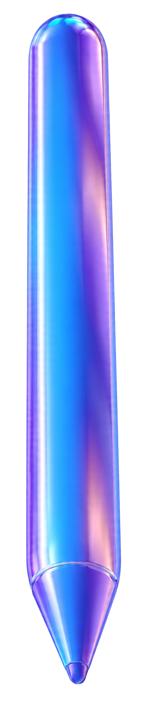
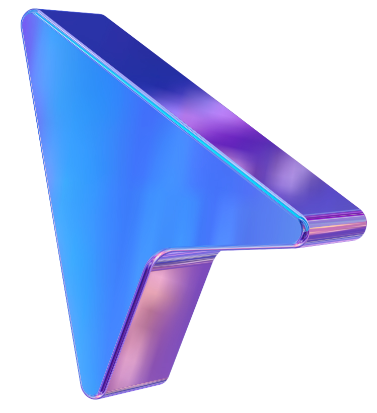

קטלוג איטונג פוצ’יוולי עגלת סופר בוכמן פדר
DESIGN BEYOND THE SCREEN

Graphic design, UX/UI and everything in between


Graphic design, UX/UI and everything in between

קטלוג איטונג פוצ’יוולי עגלת סופר בוכמן פדר